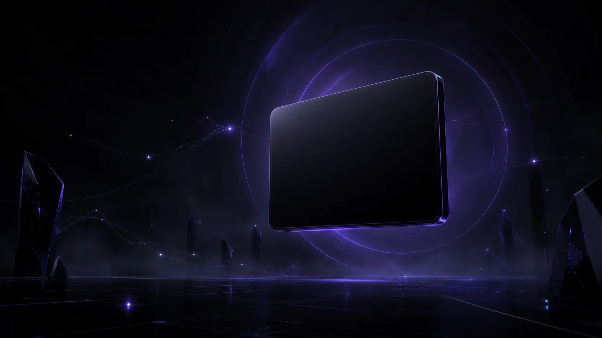

Local first
Your source code stays under your control. AI is optional. Privacy is part of the workflow.

● PRIVATE BETA · SECURITY INFRASTRUCTURE
Find vulnerabilities before attackers do. Deep local analysis, AI-assisted review, and enterprise-ready workflows—without compromising your code.
Built for repositories you are authorized to assess.$ bugbee hunt
Initializing repository...
✓ Repository indexed 218 files
✓ Secrets Engine
✓ OWASP Security Pack
✓ AI Security Review
42Findings
12High
94Risk score
98%Evidence
● READY FOR HUMAN REVIEW
Application security, reimagined for the engineering teams shaping what comes next.
● WHY BUGBEE
Every layer is built to make difficult security decisions feel clear, grounded, and fast.
Your source code stays under your control. AI is optional. Privacy is part of the workflow.
Choose the intelligence that fits your environment—your gateway, your policies, no vendor lock-in.
AI suggests. Engineers verify. Every meaningful finding moves through human review.
Context, risk scoring, and confidence metrics turn alerts into decisions you can defend.
Secrets are redacted. Repositories are understood. Workflows are policy-driven.
Security without leaving your terminal. Keyboard-first, precise, and frictionless.
● THE SECURITY LOOP
● TERMINAL NATIVE
Run a serious security investigation without swapping contexts. Bugbee brings the signal into the place your team already works.
$ bugbee hunt
Scanning repository...
218 files indexed
Loading security engines...
✓ OWASP ✓ Secrets
✓ Taint Analysis ✓ AI Reviewer
Generating findings...
42 vulnerabilities detected
12 High · 18 Medium · 12 Low
● Review Queue Ready
$
● DESIGNED WITH RESTRAINT
Security automation should be transparent at every turn. From the repository to the report, each decision stays attributable and within your control.
● A SIMPLE PHILOSOPHY
“AI hunts.
Engineers decide.”
Bugbee does not replace security engineers. It removes repetitive work so they can focus on high-confidence decisions. Security should be fast, transparent, and always under human control.
● PRIVATE BETA
Join the teams designing a more intelligent security workflow.
Early access is intentionally limited.